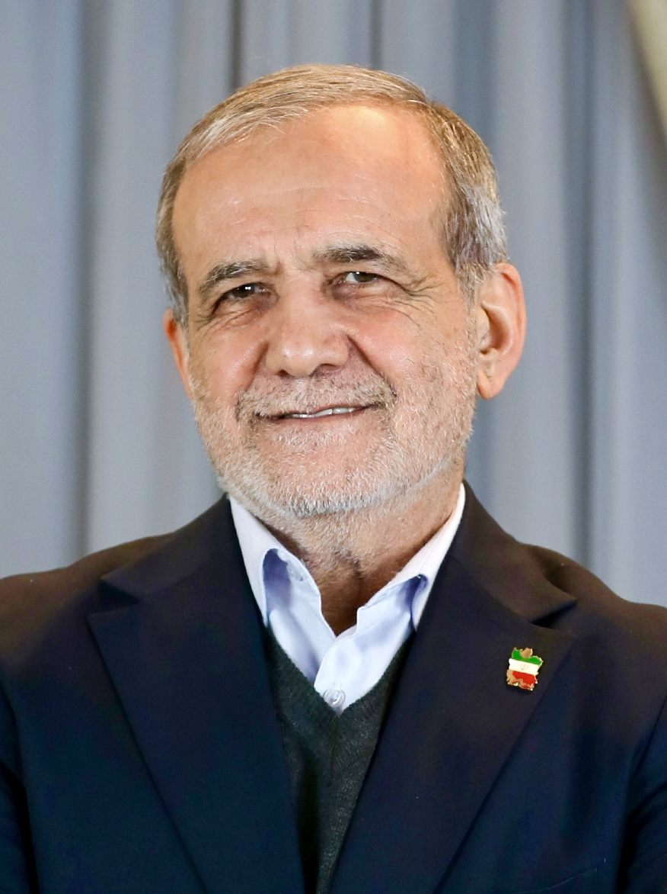
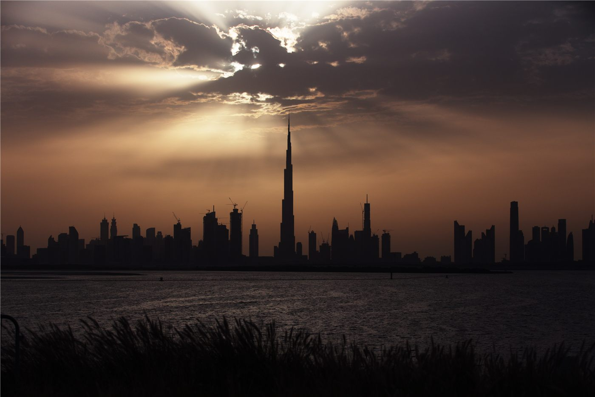
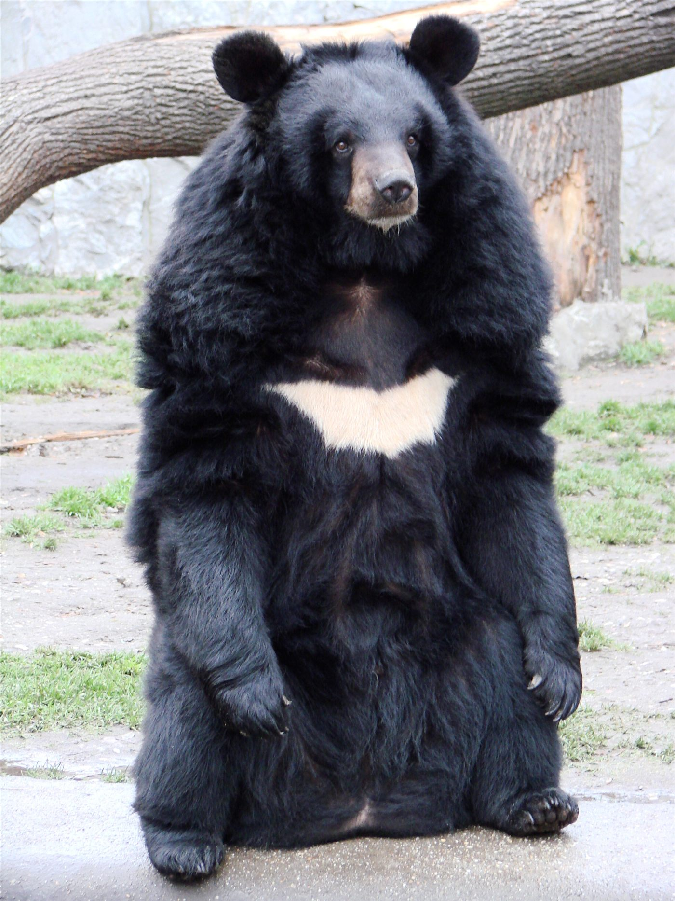
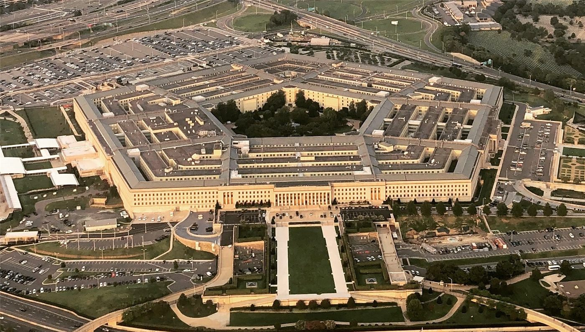
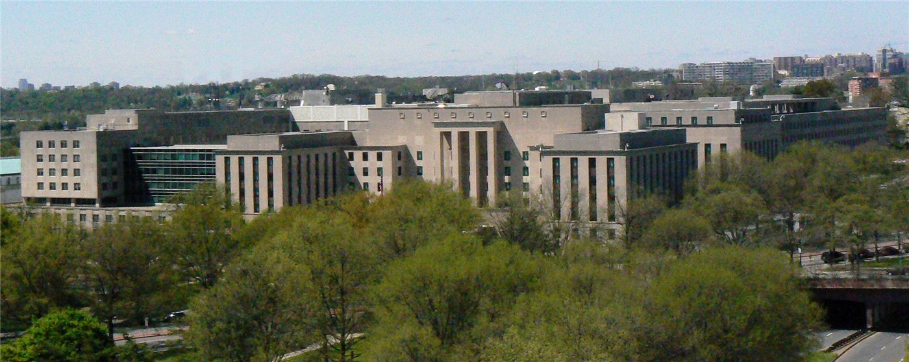
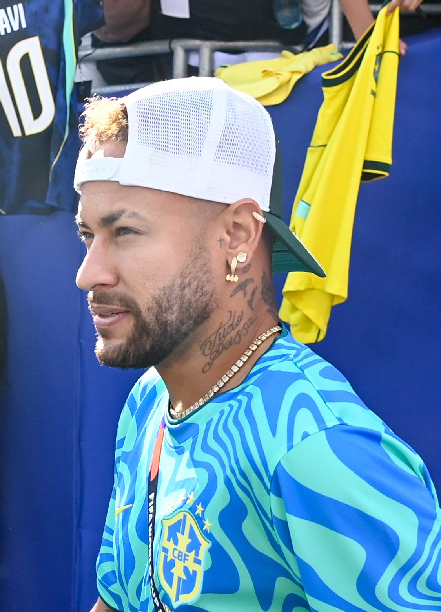
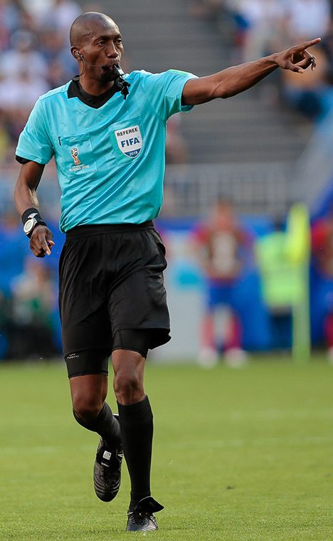

橋미국
미국트럼프 행정부 동향… 정보수장 교체·법무 정책에 시선
백악관이 국가정보국장 대행을 새로 지명하고, 법무부는 일부 정책 방향을 정리했다. 대외·통상 변수도 화인 경제에 파급.
백악관이 국가정보국장 대행을 새로 지명하고, 법무부는 일부 정책 방향을 정리했다. 대외·통상 변수도 화인 경제에 파급.

EU 지도자들이 우크라이나 지원, 2028~2034 예산, 방위·이민을 의제로 올렸다. 올해 회원국 8곳이 총선을 치른다.

7일간 본토·카나리아 제도 순방.

그레이트니코바르 섬 항만·공항·신도시 계획.

미국과 이란이 적대 종식을 약속한 양해각서(MOU)에 정식 서명했다. 미군은 곧바로 이란 항구에 대한 봉쇄 해제를 선언했고, 양측은 60일간의 평화협상에 들어간다. 첫 회담은 이번 주말 스위스에서 열린다. 유가가 내리고 위험자산이 안도하면서, 환율과 물가에 민감한 한국과 재한 화인 가계에도 숨통이 트일지 주목된다.

이란 최고지도자 아야톨라 하메네이가 미·이란 양해각서를 승인하면서도 자신은 다른 견해를 갖고 있다고 밝혔다. 정부가 서명한 합의에 최고지도자가 단서를 단 모양새로, 60일 협상의 변수로 작용할 수 있다.

전날 매파적 연방공개시장위원회(FOMC)에 흔들렸던 뉴욕 증시가 하루 만에 반등했다. 나스닥지수가 2% 가까이 오르며 투자심리가 빠르게 회복됐다. 미·이란 종전 합의에 따른 유가 하락이 안도감을 더했다.
미국과 이란의 종전 양해각서 서명으로 국제 유가가 내렸다. 중동발 공급 불안이 누그러진 영향이다. 다만 유럽 증시는 종목별로 등락이 갈리며 신중한 반응을 보였다.

콩고민주공화국에서 에볼라 바이러스병이 확산해 사망자가 200명을 넘었다. 보건 당국은 완전 통제까지 1년이 걸릴 수 있다고 내다봤다.

아랍에미리트(UAE)가 아랍권에서 처음으로 15세 미만 아동의 소셜미디어 이용을 금지하기로 했다. 청소년 보호와 디지털 중독 우려가 배경이다.

일본에서 곰 출몰이 이어지면서 주민 안전이 위협받고 있다. 지자체는 실제 상황을 가정한 곰 대응 훈련을 실시하고, 긴급 시 총기 포획을 허용하는 제도를 운영하고 있다.

트럼프 1기 행정부에서 안보를 총괄했던 인사가 한국의 전시작전통제권(전작권) 전환을 두고 '정치가 개입하면 일을 그르친다'며 신중한 접근을 주문했다.

미국 국무부 당국자가 한국 시장에서 미국 기업이 받는 대우를 두고 '더 많은 노력이 필요하다'며 문제를 계속 제기하겠다고 밝혔다. 한미 통상 현안이 다시 부각됐다.

월드컵 조별리그에서 체코가 남아프리카공화국과 1-1로 비겼다. 체코는 대회 최단 시간 골을 넣고도 종료 직전 페널티킥을 허용해 승점 1점에 그쳤다.

브라질의 간판 공격수 네이마르가 월드컵 조별리그 전 경기에 나서지 못할 수 있다는 전망이 나왔다. 컨디션 난조와 부상 회복 문제가 겹친 것으로 알려졌다.

월드컵 무대에서 여성 심판이 또 한 번 휘슬을 잡았다. 39세 미국 국적의 여성 주심이 체코와 남아공의 조별리그 경기를 주관하며 대회 역사상 두 번째 여성 주심으로 기록됐다.

미국 뉴욕의 대표 관광 명소인 센트럴파크에서 관광 마차가 통제를 잃고 질주하는 사고가 발생해 일대가 큰 혼란에 빠졌다.
역사적인 미·이란 종전 양해각서가 거창한 서명판 없이 평범한 A4 용지 한 장으로 서명되는 진풍경이 펼쳐졌다. 막판까지 문안을 손보느라 현장에서 출력하는 소동이 벌어졌다.

일본 경제가 예측 불가능한 충격(블랙 스완)과 알면서도 방치한 위험(회색 코뿔소)의 협공에서 벗어날 수 있을지 전문가들의 진단이 나왔다.